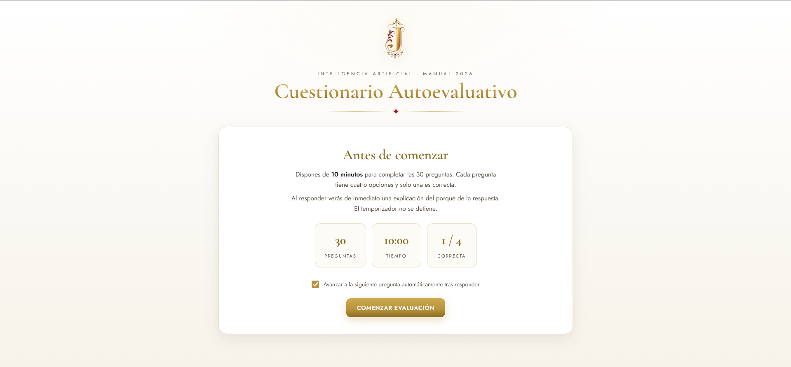
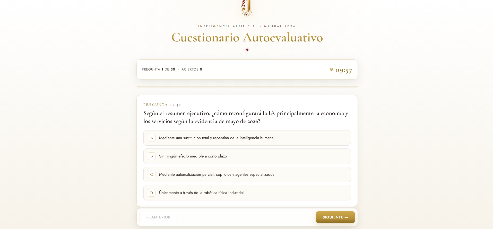
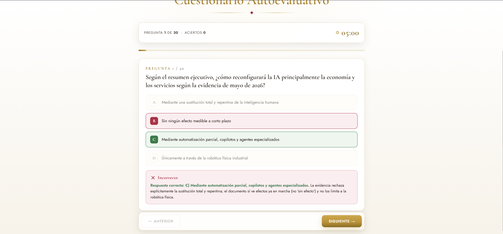
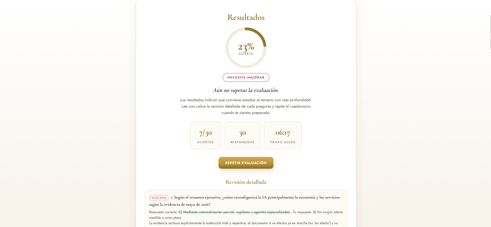

Sobre mí
Trabajo en la creación de materiales académicos, recursos interactivos y automatizaciones usando IA generativa, desarrollo web ligero y plataformas e-learning. Mi perfil combina producción de contenidos, diseño instruccional asistido por IA, HTML, CSS, JavaScript, Moodle, Gamma, Make, Synthesia y AppSheet.
Proyecto destacado
Cuestionario autoevaluativo interactivo
Plantilla web para autoevaluaciones formativas
Plantilla HTML reutilizable para crear cuestionarios formativos interactivos con 30 preguntas, temporizador, retroalimentación inmediata, barajado aleatorio de respuestas y pantalla final de resultados.
El objetivo del proyecto era convertir un documento teórico en una experiencia de autoevaluación visual, autónoma y fácil de adaptar a distintos contenidos.




Qué demuestra este proyecto
Diseño de recurso formativo
Transformación de contenido teórico en una experiencia de autoevaluación clara y usable.
Desarrollo web ligero
Uso de HTML, CSS y JavaScript sin frameworks para crear una demo funcional y autónoma.
Reutilización
Plantilla preparada para cambiar preguntas, tiempos, textos y contenido sin rehacer el proyecto desde cero.